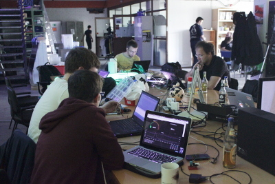
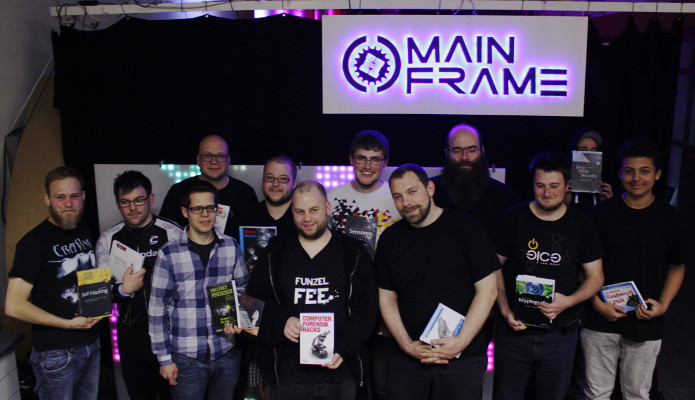

{% block content %}
{% filter markdown|typogrify -%}
Datum: 14.+15.05.2016
Beginn: Samstag um 16 Uhr
Abschluss mit Preisvergabe: Sonntag um 20 Uhr
Am 14./15. Mai fand unser anstehender Hackathon, die co-op2, im Hackspace statt. Diesmal hat sich alles um den Spacebus gedreht, der via MQTT Events versendet. Schon vorher wurde dieser Bus bei uns für das Sammeln von Temperatur- und Stromzählerwerten genutzt, jedoch gab es noch größeres Potenzial bei der Nutzung durch Sensoren und Aktoren. Ziel der Veranstaltung war es, gemeinsam den Umgang mit MQTT zu erlenen und coole Projekte daraus zu bauen, die im Idealfall auch dem Space auch eine Funktionserweiterung bieten.
Von der co-op1 haben wir gelernt, dass die Teilnehmer samstags zu sehr unterschiedlichen Uhrzeiten erscheinen können, und haben deswegen mit einem Soft-Opening begonnen. Zwischen 10 und 20 Personen waren über das Wochenende im Space zugange und haben an nützlichen und eindrucksvollen Projekten getüftelt.
Die Projekte waren diesmal eher softwarelastig einzuordnen, jedoch wurde hier und dort auch ein ESP als Aktor oder Sensor verbaut, um die Busfunktionen zu erweitern. Unter den Projekten befand sich z.B. eine Gruppe, die die Events des MQTT-Busses persistiert und mit Grafana visuell aufbereitet hat. Dort kann man nun z.B. den aktuellen Stromverbrauch und die Anzahl der Spacebesucher sehen, sowie den Verlauf der vergangenen Wochen. Das Ablesen des Stromverbrauchs ist im Rahmen dessen auch repariert, bzw. verbessert worden.

Eine weitere Gruppe baute einen Space-Schalter für unsere Fahrradwerkstatt, die sog. Radstelle. Mit diesem kann in baldiger Zukunft der Status der räumlich getrennten Werkstatt signalisiert und über die Homepage als Status abgerufen werden. Das Verlegen der dafür nötigen Netzwerk- und Stromanbindung wurde unterdessen von einem weiteren Teilnehmer vorbereitet und geplant.
Ebenfalls eindrucksvoll war die Erweiterung unserer Space Map, in der nun unser Stromverbrauch und der Öffnungsstatus live in ein SVG gerendert und angezeigt werden können. Die Grundlage für das Einbinden weiterer Sensoren ist damit gelegt.
Unsere aus Hamburg angereisten—und teilweise sehr jungen—Gäste haben mir nichts, dir nichts unseren Mainframe in Minecraft nachgebaut, und dabei eine unglaubliche Detailtreue bewiesen. Über diverse Plugins und Kniffe ließ sich der MQTT-Bus dann in das Spiel umleiten, und man konnte z.B. den Öffnungsstatus des Mainframes live im Spiel mitverfolgen. Sogar die Live-Anzeige der Visualisierungsgruppe wurde auf einer virtuellen Leinwand eingespielt.
Andere Teilnehmer haben auch schlicht den Code ihrer bestehenden MQTT-Projekte erweitert und verbessert, allgemein mit ihrer Erfahrung und ihren Kenntnissen andere Teilnehmer unterstützt, oder mal etwas am Laserschneider gefertigt.
Alles in allem herrschte eine sehr angenehme und konstruktive Stimmung im Space, die mit Suppe am Samstagabend oder Ganztagsfrühstück am Sonntag auch richtig gesellig wurde.
Ein weiteres Ergebnis des Hackathons ist eine Sammlung an Codesnippets für den ESP8266 mit MQTT-Anbindung, die es anderen Mitgliedern erleichtert, eigene Sensoren an den Spacebus anzubinden.
Zum Finale gab es natürlich wieder eine Bewertung der einzelnen Projekte, die anschließend mit tollen Sachpreisen prämiert wurden. Dazu haben uns wieder die Sponsoren O’Reilly, der dpunkt-Verlag, watterott und getdigital mit Büchern und Papercraft-Modellen unterstützt. Vielen Dank dafür an dieser Stelle!
Vielen Dank auch allen, die bei der Organisation der Veranstaltung unterstützt und mit angepackt haben. Wir freuen uns schon auf's nächste Mal!

Ein Fotoalbum mit weiteren Impressionen der Veranstaltung wird hier in Kürze verlinkt.
{%- endfilter %}
{% endblock content %}